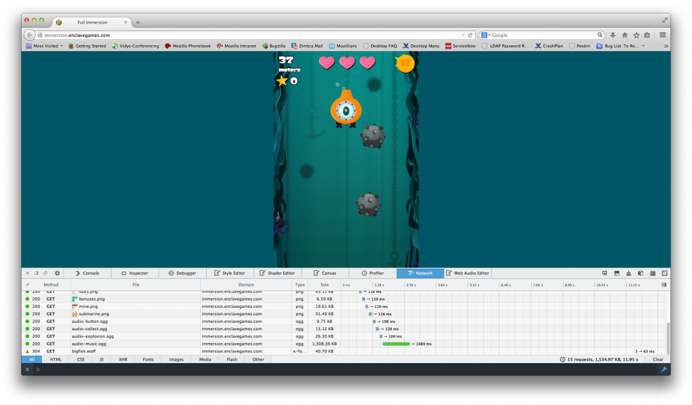
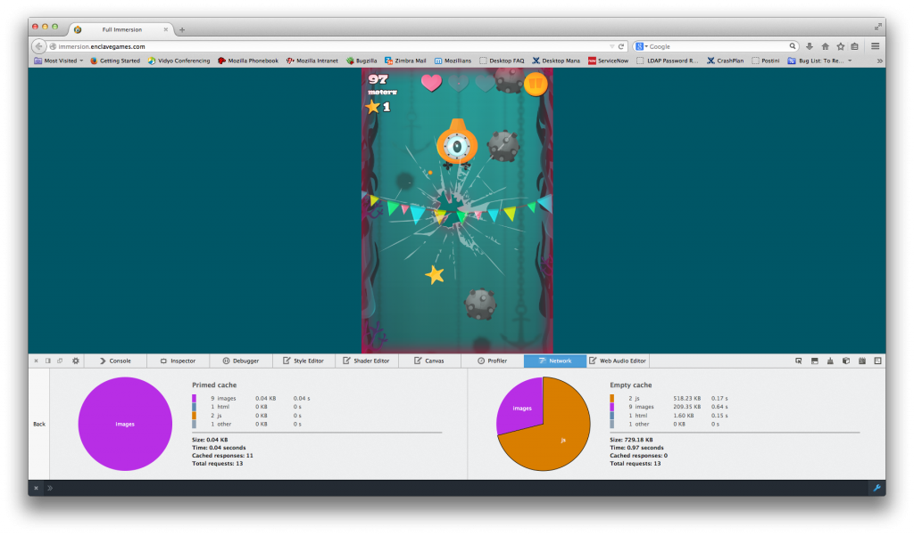
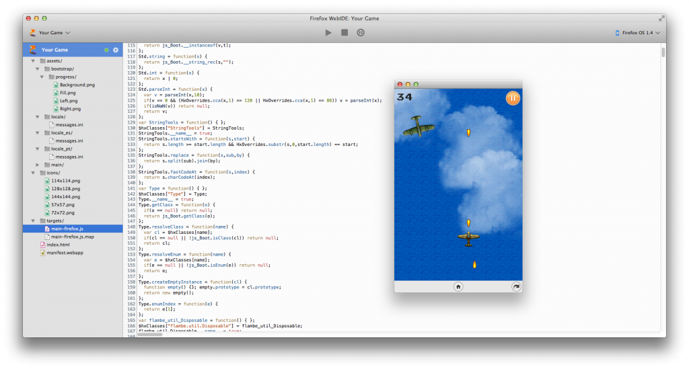
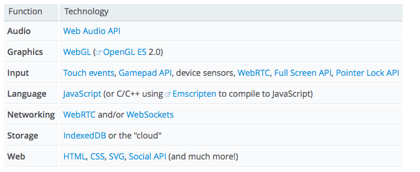

在看完《HTML5 遊戲開發資源 (上)》所介紹 HTML5 遊戲開發可用的圖像與音訊工具之後，快來看看 Firefox 所提供的其他開發者工具吧！
網路監測器 (Network Monitor)
在開發 HTML5 遊戲時，網路速度往往影響甚鉅；若要針對行動裝置開發，其對開發成本的影響更是明顯。網路監測器則可視覺化所有的網路請求，如定位、操作所花的時間、檔案的類型與大小。

除此之外，如果你想分析 App 在快取與未快取情況之下的效能，亦可透過網路監測器呈現相關結果。

可參閱網路監測器的 MDN 文章。
WebIDE
在著手開發遊戲時的諸多選擇之一，就是必須先選出要用的編輯器 (如Sublime、Eclipse、Dreamweaver、vi 等)。在大多數情況下，開發者往往已經有自己最愛用的編輯器了。如果你想在瀏覽器中開發遊戲，請參考最近發佈於 Firefox 每夜更新版 (Nightly) 中的 WebIDE。

WebIDE 專案不僅將提供全功能的編輯器，亦可作為多款本端/遠端平台的發佈媒介、除錯器、範本框架、應用管理器等。除此之外，此專案的框架所提供的 API，亦可讓其他編輯器使用該工具的功能。可參閱本篇部落格文章以進一步了解。
如果要隨時獲得 Firefox 開發者工具的最新資訊，請注意「Hacks」部落格的系列文章。另外可在 MDN上找到開發者工具的相關說明文件。
API
MDN 的 Games Zone 列出豐富的 API 與文章，可協助開發者入門。

除了這些資源以外，當然還有許多文章有利於你的開發作業。
如果你想透過 WebRTC 或 WebSockets，讓遊戲支援多重玩家的功能，就應該先了解 Together.js 是如何提供 Web App 的協作 (Collaborative) 功能。可參閱《TogetherJS 介紹 (上)》與《(下)》。
許多遊戲也需要儲存功能，而可透過 IndexedDB 處理這些需要。可參閱《Breaking the Borders of IndexedDB》進一步了解 IndexedDB 的延伸功能。另外，localForage 可跨瀏覽器支援簡易的儲存功能。參閱《localForage: Offline Storage, Improved》進一步了解。
遊戲最佳化
現今 HTML5 遊戲已能為開發者提供許多強大功能。許多目前在行動裝置上執行的遊戲，將來勢必能追趕上桌機版遊戲的效能。如果你規劃讓自己的遊戲未來能成功跨平台，就必須最佳化自己的程式碼。這篇《Optimizing your JavaScript Game for Firefox OS》則提及了許多技巧，能協助你撰寫的遊戲能在初階行動裝置上順利運行。
本地化
為了讓自己的遊戲能觸及更多消費者，你應該試著讓遊戲也擁有不同的語言，因此可將本地化的功能帶入遊戲之中。Mozilla 現正努力招聘譯者，要協助大家翻譯自己的遊戲。可參閱本篇文章以進一步了解。
要聽見你的聲音
Mozilla 本身就是開發者與使用者所組成的社群，同時需要大家的協助與意見。如果你想為產品建議特殊功能，歡迎透過 irc.mozilla.org 或郵件群組和大家討論；也可以到 bugzilla.mozilla.org 提交問題。另外還有 DevTools 與 Open Web Apps 意見反應管道。